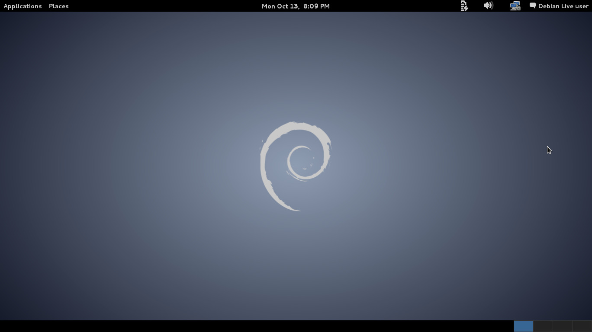

Debian
Welcome to our Debian page now Debian is know as a Rolling Release Distro now that
mean that once you install the OS you never need to install the OS again as in you never new to install an newer version of
the OS, all you ever need to do is software update, and your always have the latest version of the OS install.
 For any help with Debian you can vist the
Debian Support page which have help link.